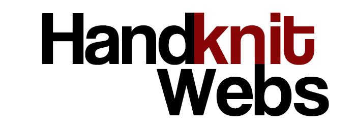

Why Spokane? Spokane's motto "Near nature, near perfect" says it all... well, almost. There are also a lot of great things happening in web design here in Spokane that make it an exciting market for what we do. 14Four and Seven2 have been bringing big interactive web design contracts with national brands to Spokane for years, and turning out some really innovative work. Ed Reese of Sixth Man Marketing is constantly advancing the front line of Search Engine Optimization for his clients. We have production firms like Zipline Interactive, Design Spike and 20 Miles North that turn out a lot of great sites. And several ad agencies in the area have really strong web teams as well, including folks like BHW1, KlundtHosmer, and MDI Marketing.
Spokane also has a really active social media community and our own on-line networking group, LaunchPad INW. Not to mention a great collection of talented photographers and traditional artists around to collaborate with. With all this, Spokane is really establishing itself in the web world.
If you are looking to establish your own unique web presence or take your web design to the next level, take a look around and shoot us a line to get started on your web design today.

© Handknit Webs 2012